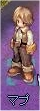
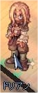
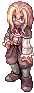
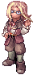
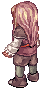

画像にリンクがはってあるものは、クリックすると別窓で大きめサイズが表示されます。
[マプ]
所在地；コモド（223,188） |
  |
[ベルダ]
所在地；アルベルタ中央付近 |
  |
[ドリアン]
所在地；イズルード中央北東道具屋内 |
|  |
back
(c) Gravity Co., Ltd. & Lee MyoungJin(studio DTDS). All rights reserved.
(c) GungHo Online Entertainment, Inc. All Rights Reserved.
当コンテンツの再利用（再転載・配布など）は、禁止しています。